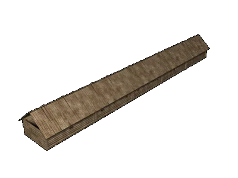

 |
Жилые клети |
| Жилые клети входили в
конструкцию оборонительного вала подавляющего
большинства крепостей XII века. С самого начала
такие клети в крепости предназначались для
жилья. Чаще всего клети представляли собой связанную систему срубов, хотя довольно редко, но все же встречались и отдельные срубы, приставленные один к другому. Иногда они располагались в два ряда -- клети для хозяйственных нужд примыкали к основному ряду клетей, которые являлись жильем. Ширина клетей между двумя срубными стенками обычно составляла от 2,5 до 3,2 метров, и только в одном Ленковецком поселении размер был значительно больше -- 4,4 метра. Поперечные стенки, врубленные в продольные, расставлялись на расстоянии от 3 до 4,2 метров, и только в том же поселении -- всего на 1,7-1,8 метра, то есть здесь клети были повернуты вдоль вала короткой стороной. Часто между двумя клетями обычного размера помещалась меньшая клеть -- в этом случае там располагалась печь. Перекрытием клети служил бревенчатый накат или настил, поверх которых клали еще один накат из тонких бревен. Над накатом располагался слой глины и земли, который являлся одновременно и основанием боевой площадки для защитников крепости. Жилые клети в XII веке встречались в районах как с наземными, так и с полуземляными постройками. Клети представляли собой особый вид жилья, обусловленный специальным назначением и характером укреплений крепостей, в которых они располагались. |
Текст и
иллюстрации (c) 1997 Snowball Interactive Entertainment, Inc. |